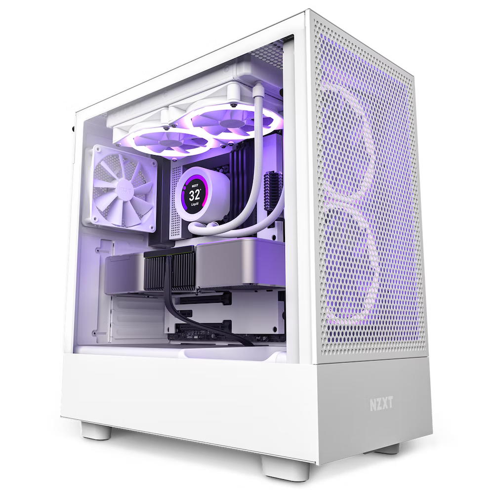

Das Gehäuse

Spezifikationen
- Material: In der Regel aus Metall oder Kunststoff
- Grösse: Variiert von Small Form Factor (SFF) bis Full Tower
- Erweiterungssteckplätze: Ermöglicht die Installation von zusätzlichen Komponenten
- Kühlung: Geeignet für Lüfter oder Flüssigkeitskühlung
- Anschlüsse an der Vorderseite: Ermöglicht den Zugang zu USB-, Audio- und anderen Anschlüssen
- Kabelverwaltung: Mit Kabelführungslöchern und Kabelbindern, um die Kabel zu organisieren
- Fenster: Optionale Funktion, die einen Blick auf die internen Komponenten ermöglicht
Zweck
- Schutz der internen Komponenten vor Beschädigung und Staub
- Bietet Platz für Erweiterungen und Anpassungen
- Erleichtert den Luftstrom und die Kühlung, um Überhitzung zu vermeiden
- Ermöglicht den Zugriff auf externe Geräte und Anschlüsse über die Vorderseite
- Verbessert die Ästhetik und Personalisierung durch Designoptionen
- Hilft bei der Kabelverwaltung und -organisation für ein sauberes Aussehen